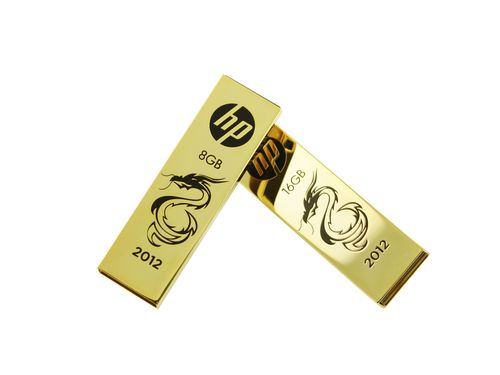
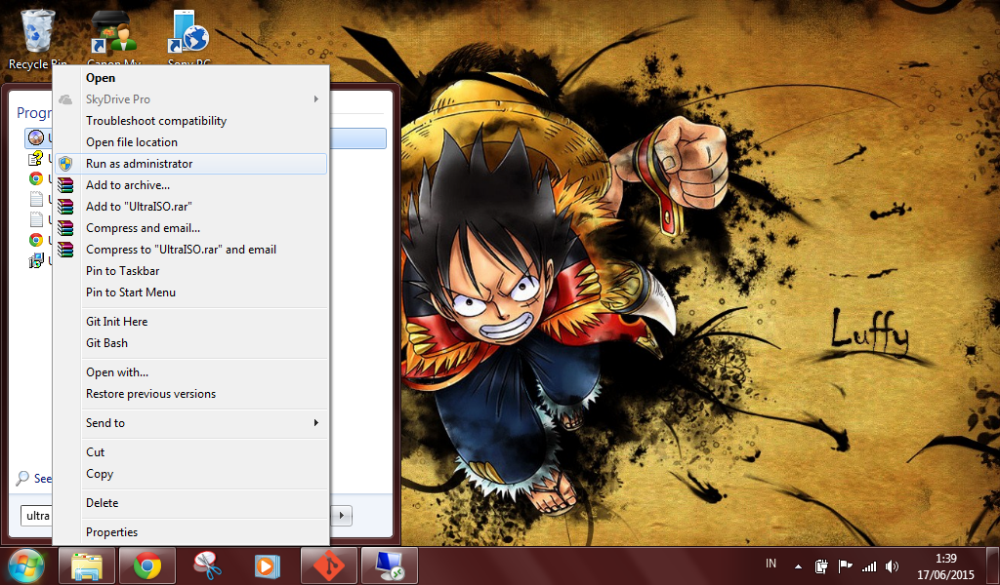
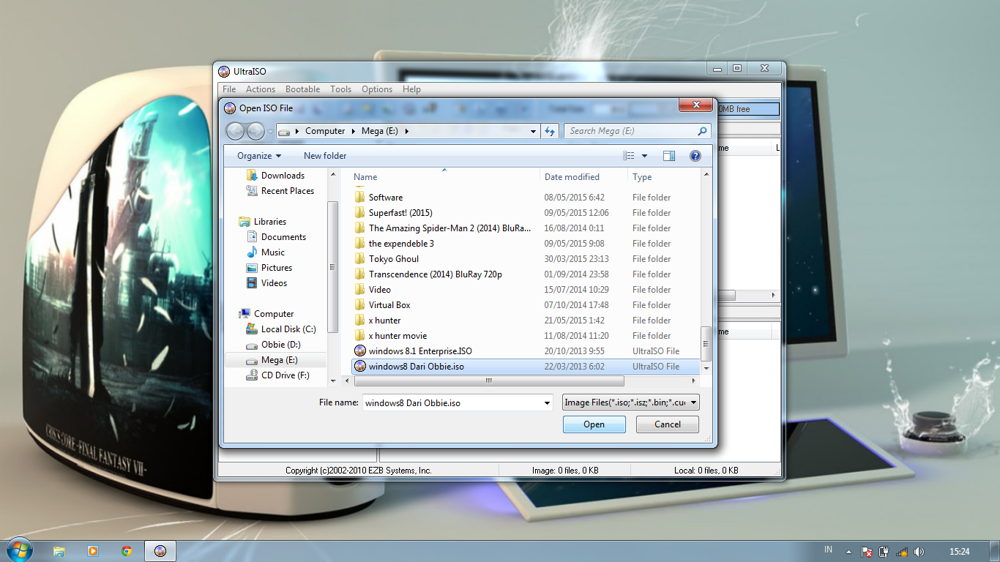
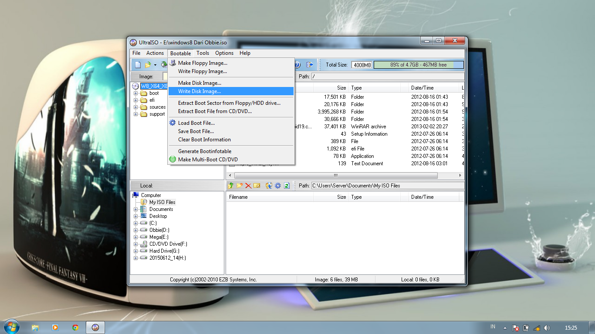
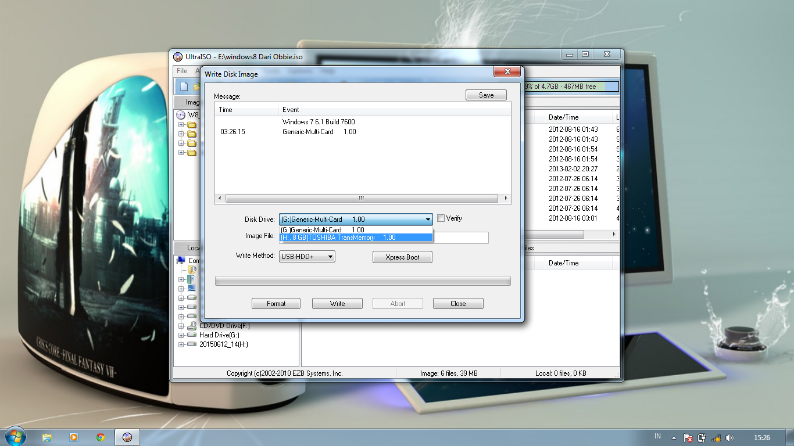
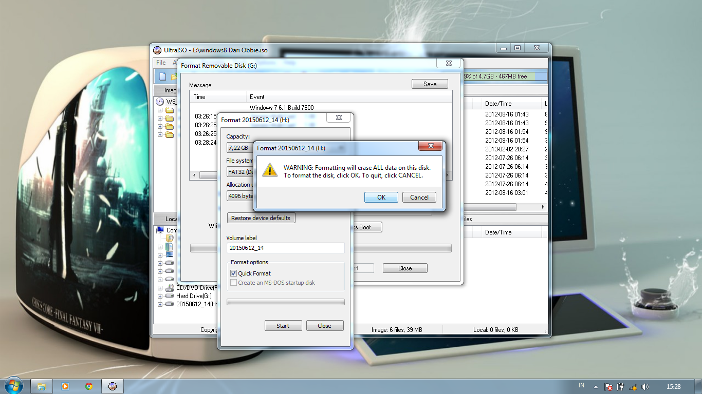
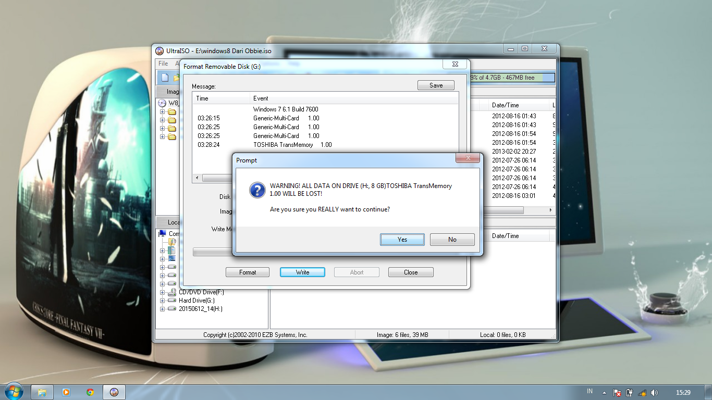

Cara Menginstal Windows 8 lewat FD
TEAM_IDV2
Nama Kelompok TEAM
Obbie Cristian
Imal Zaya Harahap
Kadek Sukawati
Dwi Herydo Gultom
Persiapan
Langkah - langkah
- 1.Siapkan bahan - bahan
- 2.Install windows 8 ke FD
- 3. Ubah pengaturan Boot Order / Boot Priority
- 4.Install windows 8
1. Siapkan Bahan - Bahan
Bahan - bahannya sebagai berikut:
- FlashDisc Minimal 8 Giga
- 
- Software Ultra Iso
- Iso Windows 8

2. Install Windows 8 ke FD
Buka Ultra Iso dengan Run As Adminstrator

Cont..
Klik File lalu klik Open dan cari data ISO win 8

Cont..
Klik Bootable lalu klik Write Disk Image

Cont..
Klik Disk Drive dan Pilih FD

Cont..
Klik Format dan Format FD

Cont..
Klik Write dan tunggu sampai selesai

3. Ubah pengaturan Boot Order / Boot Priority
Masuk Ke Bios

Cont..
Geser Kursor ke Boot

Cont..
Geser Kursor Boot Device Priority lalu tekan Enter

Cont..
Ubah Flashdisc ke urutan no 1

Cont..
tekan ESC lalu geser kursor ke Exit dan geser ke Save Changes and Exit

Cont..
Catatan : Setelah install win 8 dan ketika merestart otomatis pertama kali, masuk kebios dan ubah lagi boot priority nya menjadi no 1. harddisk kita

4.Install windows 8
Klik Instal Now

Cont..
Ubah Tanggal dan Currency Format , Lalu Klik Next

Cont..
Beri cek di I accept the license term dan klik Next

Cont..
Pilih Custom : Install Windows Only

Cont..
Pilih Partisi lalu klik Next

Cont..
Tunggu Sampai selesai

Cont..
Di personnalize Buat PC name nya lalu next

Cont..
Setings Pilih Use express settings

Cont..
Di Sign In to Your PC masukan Username, Password, Reenter Password, dan Password Hint lalu klik Next